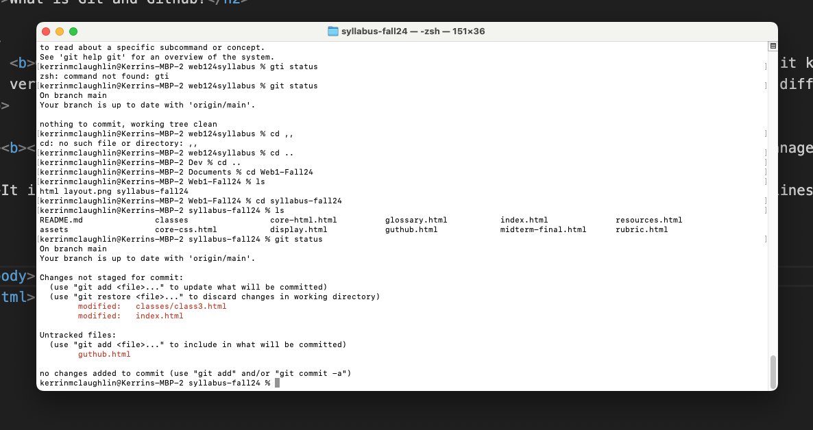
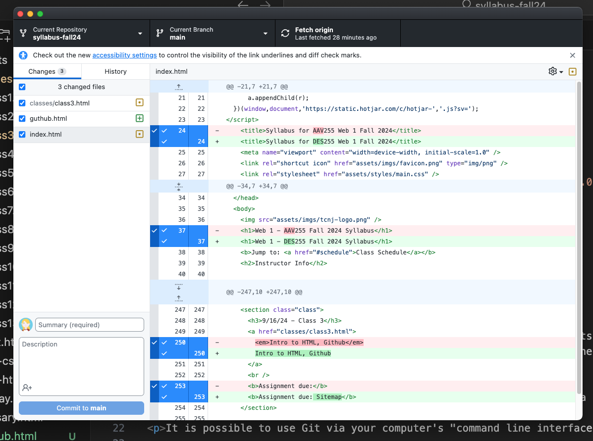
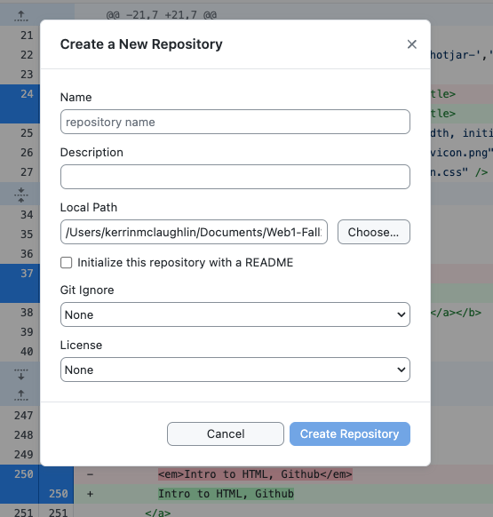

Git is used by developers to track and manage their code. Its main benefit is that it keeps track of file versions, meaning that if you update your the code in a file, you can still access previous versions if you need them.
It is also
very helpful for when multiple developers work together. Git has the ability to allow for different developers to work on different "branches" of code and can intelligently "merge" branches together. A coding project on Git is called a repository, or "repo".
GitHub is a software brand that manages Git repositories and makes it possible to host the code on the web. We will use Github to manage our Git repositories in this class.
It is possible to use Git via your computer's "command line interface", works by entering lines of commands for your computer to execute. But an easier and more intuitive way for us to do this is to use GitHub Desktop, a software app for your computer meant to act as an interface for using Git and uploading your code to Github

Accessing Git via the Command Line Interface requires you to know the exact commands to enter and does not offer visual feedback

GitHub Desktop makes Git a lot more intuitive. Github Desktop is an example of a GUI or Graphical User Interface
The opposite of a Graphical User Interface (GUI) is a Command Line Interface (CLI).
For the purposes of our class, make a folder on your computer where all of your repositories can live. When you create a Git repository, you are creating a physical folder location on your computer for the repository and all of the files within it to live. Be careful not to move this folder, as this will "break" the file path and the repository. Because of this, I recommend creating a dedicated folder to keep things organized. Creating a new folder is usually accessed by going to File > New Folder in either Finder or File Explorer depending on your operating system.
Now, open GitHub Desktop, and navigate to File > New Repository. Give your repository a descriptive name. Use dashes instead of spaces. In general it is a best practice to create file and folder names without spaces. Optionally, give your repository a description. For Local Path, make sure to choose the folder we created in Step 2 as the place where this repository will live.
You can leave the Git Ignore, License, and README settings untouched.

Click create repository. A new folder matching the name of your repository will be created. From now on, any changes or files added to this folder will be tracked by Git.
Saving changes to your repository
Any changes you make within your repository should be automatically tracked in GitHub desktop. If you open your repository, you should see a list of changed files along with a log of what has changed. To save these changes to Git, you need to "commit" them.
First, select what files you want to commit. (They will most likely all be selected by default, and you can keep it this way)
Next, enter a summary of your changes in the space next to your icon
Then, select "commit to main". "Main" refers to the current branch you are on, which by default is named "Main". For the purposes of our class we don't need to create multiple branches
Your changes are now "committed" to your local Git repository, but not yet published to GitHub